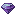
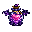
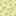
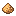
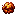
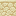
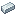
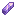
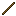
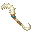

Les quatre voies
patience avant toutQuatre voies, quatre patiences. Le dragon ne se possède pas — il se mérite, par la nourriture, la défaite, ou la potion.
- Tier II · Terrible Terror — La main directe. Méthode la plus simple. Tiens du saumon, morue ou poisson tropical, approche sans arme. Le dragon mange (timer 40–120 ticks), la jauge monte. Au seuil, l'apprivoisement réussit. Aucune potion, aucun combat.
- Tier II · Stinger, Deadly Nadder, Gronckle — La main tendue. Nourriture spécifique : mouton (Stinger), poulet ×30+ (Nadder), bœuf (Gronckle). La barre monte en Phase 1 (0→100), puis 1 chance sur 7 par interaction au seuil. Aucune armure ni arme équipée.
- Tier III · Skrill, Triple Stryke — Par la défaite. Ne pas tenter de les nourrir en combat — la foudre ou le venin répondront. Inflige-leur 20 cœurs de dégâts (mécanique de reddition). Invincibilité 2,5 s + fenêtre passive 2 min → offre alors leur nourriture.
- Tier IV · Night Fury, Light Fury, Monstrous Nightmare, Hideous Zippleback — La potion sacrée. Triple rituel : nourriture spécifique, aucune armure ni arme, et un effet de potion adapté à l'espèce (Vision nocturne, Invisibilité, Résistance au feu, Force).
- Hors-tier · Night Light — Le don de naissance. Croise un Night Fury et une Light Fury apprivoisés. Le rejeton naît déjà allié. Aucune potion, aucun combat.
Un dragon mal apprivoisé n'oublie pas. Il fuira à la première occasion, ou pire, retournera contre son maître. La vitesse ne vaut rien sans la confiance. — Avertissement du scribe
Recettes essentielles
brassage & craftFiltre d'amour
Brassage alchimique
Belzium + Awkward Potion
→
Awkward Potion
→

Filtre d'amour- Mine du Belzium dans The End (Endstone Y 0–60, pioche nétherite ou Gronckle Iron).
- Brasse le Filtre d'amour : Belzium + Awkward Potion dans un alambic.
- Trouve une Light Fury sauvage (dans les plaines ou biomes ouverts).
- Clic droit sur la Light Fury sauvage avec le Filtre — elle te donne l'Écaille-Compas.
- L'Écaille-Compas indique la direction du Night Fury légendaire dans The End.
- Suis la boussole jusqu'au Night Fury légendaire et apprivoise-le (Tier IV : potion Vision nocturne + saumon/morue, sans armure ni arme).
Belzium (minerai)
Extraction · The End
Endstone Y 0–60 · Pioche nétherite ou Gronckle Iron
→
Belzium
Pioche nétherite ou Gronckle Iron
→
Belzium
Gronckle Iron
Minerai · N'importe quelle pioche
Minerai présent dans l'Overworld (Y −20 à 60) — miner avec n'importe quelle pioche
pour obtenir du Raw Gronckle Iron.
Autre méthode : donne de la pierre, cobblestone, gravier, andésite, granite, diorite,
deepslate ou blackstone à un Gronckle apprivoisé — il mâche et recrache
1 Raw Gronckle Iron après ~3 secondes.




Transforme le Raw Gronckle Iron en lingot utilisable via ce craft.
Dragon Staff
Craft façonné · Table de craft


Clic droit → téléporte ton dragon apprivoisé (Y+8, sol solide). Fonctionne cross-dimension (Overworld / Nether / End).
Commandes clavier
Options › Commandes › Isle of Berk| Action | Touche | Contexte |
|---|---|---|
| Capacité régulière | R | Souffle / tir principal (maintenir pour charger plasma blast) |
| Capacité spéciale | X | Pouvoir secondaire (tempête, manteau de feu, invisibilité…) |
| Descendre en vol | Ctrl | Ne pas utiliser Shift — Shift démonte le dragon (vanilla wantsToStopRiding) |
| Saisir / relâcher | G | Attrape une entité dans les griffes (ami à transporter, ennemi à larguer) |
| Démonter Terrible Terror | M | Fait descendre le dernier Terrible Terror perché sur le joueur |
| Tonneau (barrel roll) | C | En vol uniquement. Désactivé en S38 — réactivation future possible |
Pour monter sur un dragon apprivoisé : clic droit main vide. Pour altitude : barre d'espace. Pour progresser dans l'apprivoisement : bâton (stick) en main pour voir la jauge.